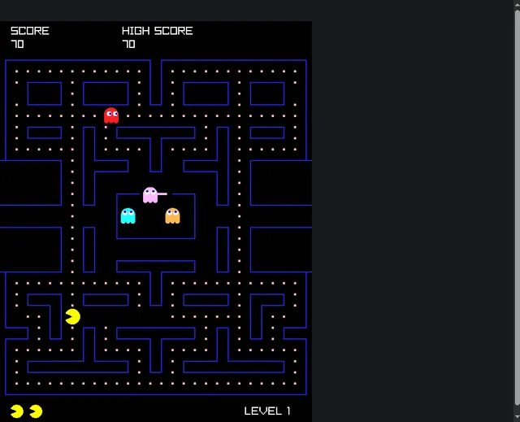
A maze game
A maze, a mouth and four ghosts: the pellets and the ghosts are entities, the maze a text that functions read. Sound too.
←↑→↓ steer, Enter again
Programs written in ent-lang,
a language of entities, components and systems, compiled to WebAssembly with
ent build --web and running here in your browser. Click a page,
then use the keys it lists.
Natively the same programs run on all cores; in the browser each runs on one thread.
Each fills the browser's tab. On a phone they answer touches, and those played or steered with keys show their keys under them.

A maze, a mouth and four ghosts: the pellets and the ghosts are entities, the maze a text that functions read. Sound too.
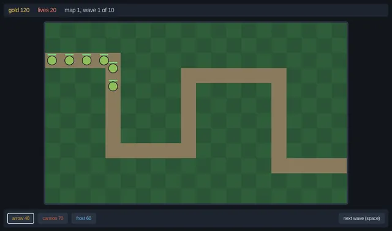
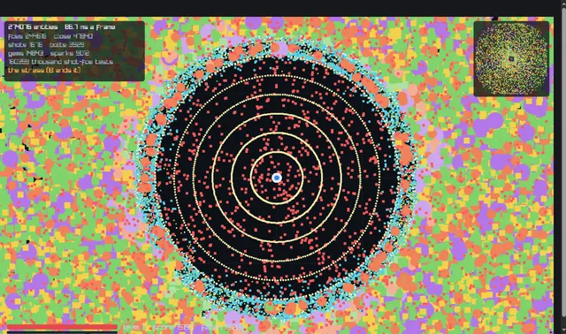
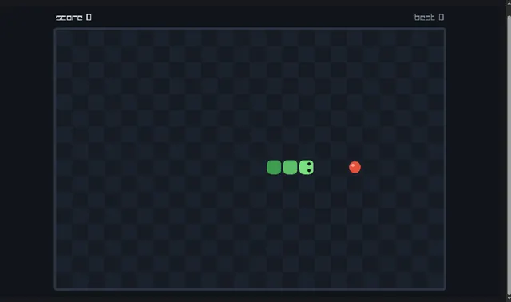
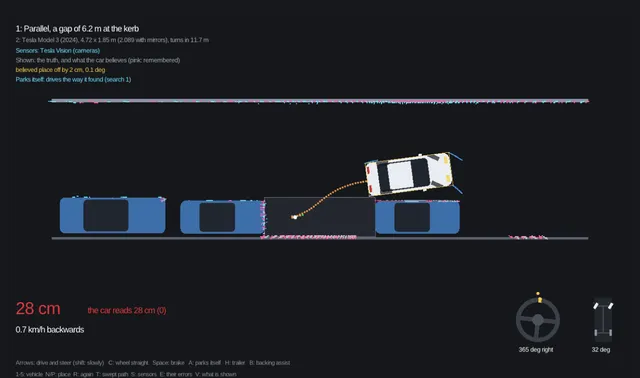
Real vehicles' numbers, ultrasonic sensors and camera vision with its blind zone, what the car believes beside the truth, a car that parks itself, a trailer, and a car park where six park at once.
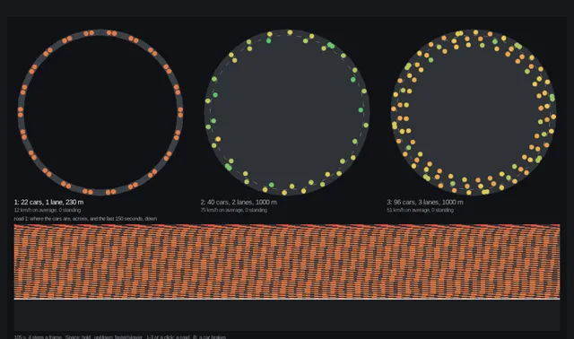
Sugiyama's 22 cars on a 230 m ring, where a jam forms that nothing caused; lanes with trucks and passing; the road over the last minutes below.
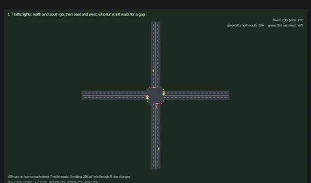
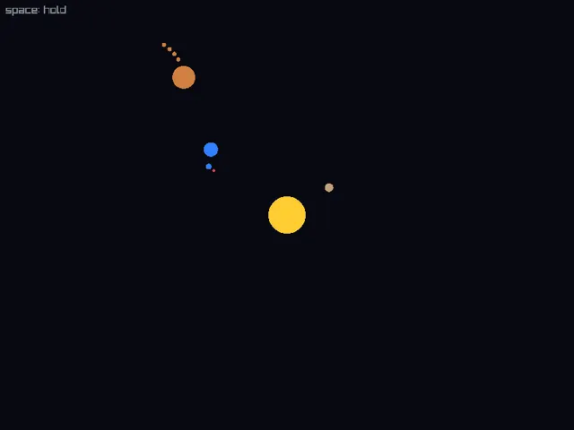
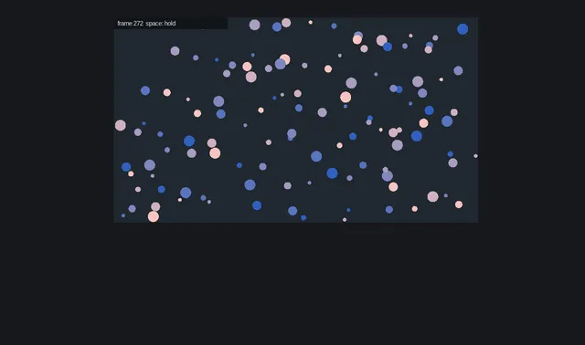
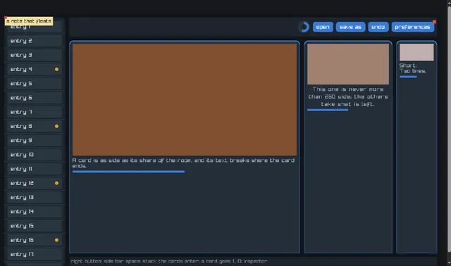
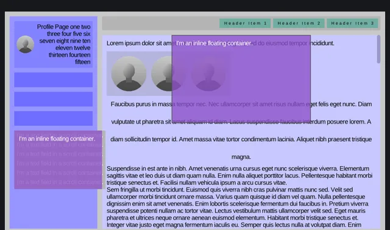
Clay's example with the same sizes and colours: a box that scrolls with a bar to drag, and boxes that float.
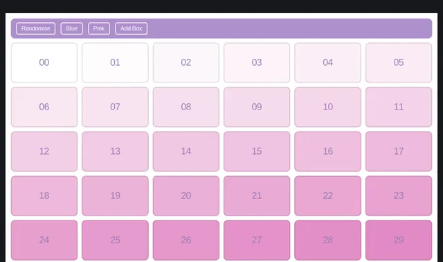
Thirty boxes that move, change colour, come and go in half a second each: every box an entity.
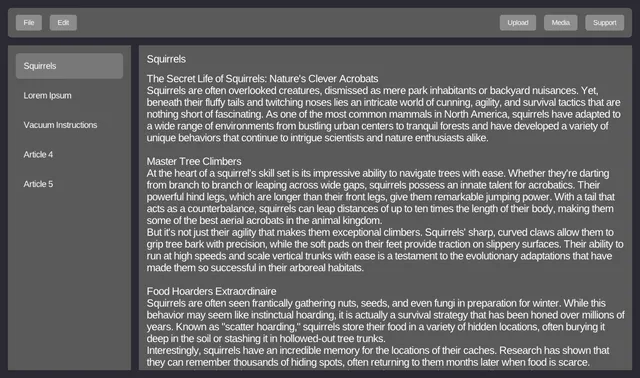
A header with a menu that drops down, a side bar of documents, and the chosen one in a box that scrolls.